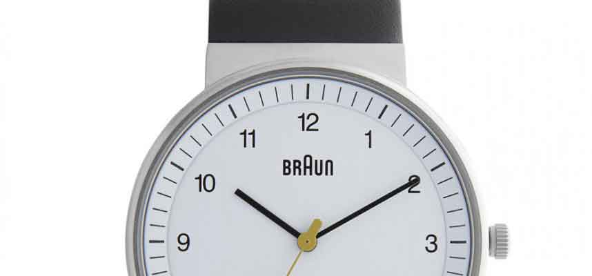

Thoughts on design & why I love my new watch
So I recently got a new watch. Its made by Braun and its perfect. Its a perfect watch.
I should probably expand on that statement a little. It's a perfect mix of form and function. Every aspect of the design exists to facilitate the primary (and only) function of telling the time. And it looks damn good.

For me this encapsulates what good design is all about, at no point should design get in the way of functionality in fact it should facilitate it and should look good doing it.
Whenever we're designing anything (in my case web sites and user interfaces) the goal and function of the product should be Formost in our mind. We should constantly be questioning our decisions and choices, does adding this design element help the user accomplish their task or is it just visual fluff? Every part of the design should have a purpose.
Truly great design is design that you hardly notice, you should be able to pick up a product or use a service and accomplish your task easily and simply and it should be a nice experience. That's great design. That means a designer has done his job.
The designer of my watch did his job, but then he was damn good at it :-)